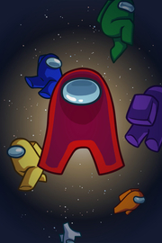

Among Us
Detalles
 |
|
| Tiempo de juego | No Jugado |
| Última actividad | Nunca |
| Añadido | 29/07/2025 4:35:27 |
| Modificado | 29/07/2025 23:45:08 |
| Estado de finalización | Not Played |
| Librería | Playnite |
| Fuente | 2TB GAS |
| Plataforma | PC (Windows) |
| Fecha de lanzamiento | 16/11/2018 |
| Puntuación de la Comunidad | 91 |
| Puntuación de la Crítica | 85 |
| Puntuación de usuario | |
| Género | Casual |
| Desarrollador | Innersloth |
| Editor | Innersloth |
| Característica | Compat. Total Con Mando Compras Dentro De La Aplicación Cooperativo Cooperativo En LAN Cooperativo En Línea Cromos De Jcj Jcj En LAN Jcj En Línea Logros De Multijugador Multijugador Multiplataforma Préstamo Familiar Remote Play En Móvil Remote Play En Tableta |
| Enlaces | Punto de encuentro Discusiones Guías Noticias Página de la tienda PCGamingWiki Logros |
| Tag | 2D Acción Caricaturescos Casuales Ciencia ficción Coloridos Cooperativos Cooperativos en línea De arriba a abajo Deducción social Divertidos Espacio Extraterrestres JcJ Juegos de fiesta Minijuegos Multijugador Multijugador local Psicológicos Supervivencia |
Descripción

Saludos, recluta:
Te damos la bienvenida al nuevo mapa de Among Us, Airship. Trabaja en equipo en esta nave para llevar a cabo tu importante misión..., ya sea como tripulante o como impostor.
Esta actualización gratis incluye lo siguiente:
- El cuarto mapa, el más grande hasta la fecha.
- Nuevas tareas, como pulir joyas, vaciar el basurero (¡qué diver!) y algunas más.
- La posibilidad de elegir la sala en la que empiezas.
- Zonas nuevas que explorar (o en las que morir).
- Movilidad mejorada con escaleras y plataformas móviles.
- Nuevos gorros gratis, como una insignia de corazón, cejas de enfado, un tocado de unicornio, un guante de goma ¡y muchos más!

Un juego para 4 a 15 jugadores en línea o en modo local mediante wifi en el que debéis preparar vuestra nave espacial para el despegue. Pero, cuidado: ¡uno o más jugadores elegidos al azar entre la tripulación son impostores dispuestos a matar al resto!
Al haber sido ideado originalmente como un juego de socialización, se recomienda jugar entre amigos en una red local o en línea usando un chat de voz. Disfruta de este juego multiplataforma entre PC y dispositivos Android y iOS.

- Gana completando todas las tareas para preparar la nave o expulsando a todos los impostores.
- Reacciona rápido para reparar los sabotajes de los impostores.
- Comprueba el mapa de administración y las cámaras de seguridad para saber dónde están los otros tripulantes.
- Informa al instante de los cadáveres que encuentres para discutir con los demás e intentar descubrir al impostor.
- Convoca reuniones urgentes para discutir sobre comportamientos sospechosos.
- Vota para expulsar a los jugadores de los que sospechas.

- Mata a tripulantes e incrimina a inocentes.
- Finge hacer tareas para camuflarte entre la tripulación.
- Viaja por los conductos para moverte rápidamente por la nave.
- Haz sabotajes para sembrar el caos y dividir a la tripulación.
- Cierra puertas y atrapa a tus víctimas para matarlas discretamente.

Características
- Personalización: Elige un color y un gorro.
- Muchas opciones de juego: Añade más impostores, más tareas ¡y otras cosas!
- Encuentra rápidamente una partida en línea en la lista de anfitriones.
- Chat de texto en el juego.
- Buena integración con Discord.
- ¡Partidas multiplataforma entre PC y dispositivos Android y iOS!